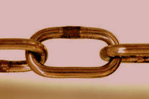

Drilling
Repetitio est mater studiorum(Repetition is the mother of learning) |
 |
What is a drill? |
The usual definition of a drill is a tightly controlled, teacher-led
form of repetitive practice.
You probably experienced some drilling as a language learner at school
with the teacher prompting and you responding in a very controlled and
predictable manner. Here's an example of a language drill in
English teaching:
| Teacher: | I go to school. When |
| Student(s): | When do you go to school? |
| Teacher: | I go shopping. Where |
| Student(s): | Where do you go shopping? |
| Teacher: | I like tennis. Why |
| Student(s): | Why do you like tennis? |
| Teacher: | I cook fish. How |
| Student(s): | How do you cook fish? |
This is called a transformation drill because the students are required to transform the teacher's prompts into a wh-question form depending on which wh-word the teachers adds to the end of each statement.
Does drilling work? |
There are conflicting theories concerning the usefulness of drilling learners. The debate is between those who believe that learning a language is essentially a process of acquiring new habits and those who believe that learning involves a cognitive, thinking process. The arguments include:
| In favour | Against |
| Most learners like it | Some learners find it embarrassing |
| It's essential for pronunciation work | It makes no difference to learning |
| It makes production automatic | It's based on an outdated learning theory |
| Drills give learners confidence | Drills are meaningless and non-communicative |
| Drills provide valuable speaking practice | Drilling is boring |
Even teachers who would consistently agree with the right-hand column's statements will often drill when focusing on pronunciation, by the way.
This guide does not attempt to answer the Who's right? question. That is something you need to decide for yourself.
 |
Written drills |
Most guides to drilling focus on spoken drills, of course, and this
one is no exception.
However, we should not forget that all sorts of drills can also be set
as written work with learners writing responses to what they read rather
than responding in speech to what they hear.
Some assumed advantages of written over spoken drills are:
- Written drills can be far more complex and demanding than spoken drills because there is no requirement to memorise what you hear. The text is always there for the learner to refer to. For example, a spoken transformation drill requiring people to convert direct to indirect speech would be limited in the classroom to short utterances. In written work, learners can be invited to transform whole texts in the same way.
- Written drills allow learners time to formulate their responses without any public pressure so they can apply what they know to the language rather than being required to produce an automatic response.
- Written drills can be much longer than spoken drills because the learner can do some of it, take a break, and return to the exercise at any time. In the classroom, boredom and disengagement set in quite quickly.
Bear in mind that what follows is just as applicable to written as it is to spoken drills.
 |
Varieties of drills |
In what follows, we will deal only with the three main types of drills.
- repetition drills
- As the name implies, these are very simple drills in which the
learners just repeat, as well as they are able, what the teacher
(or another prompter such as a recording) has produced. Drills
like this are frequently used for pronunciation work or for complex
grammatical units which the learners need 'to get their tongues
around'. For example:
Repetition drills are often appreciated by learners (because they are simple and have almost immediate feedback). They can, however, become tedious if they go on too long.Teacher: I'll come if I can Teacher: enthusiastic Student(s): I'll come if I can Student(s): enthusiastic Teacher: I'll go if I should Teacher: marvellous Student(s): I'll go if I should Student(s): marvellous
Backchaining
An effective and refreshing change is to drill things backwards because that allows the learners to focus better. For example:
Start with: met Mary (students repeat)
Then: would've met Mary (students repeat)
Then: you would've met Mary (students repeat)
Then: to the party, you would've met Mary (students repeat)
Then: you'd come to the party, you would've met Mary (students repeat)
Then: If you'd come to the party, you would've met Mary (students repeat)
such drills are, the theory goes, effective in getting the stresses in the right places and focusing learners on the intonation patterns of longer utterances. - substitution drills
- These drills usually require a simple substitution from the
students although they can get quite elaborate. For example:
Teacher: I'll come if I can
sheTeacher: She's in America, isn't she?
AfricaStudent(s): She'll come if she can Student(s): She's in Africa, isn't she? Teacher: I'll go if I should
MaryTeacher: He went to America, didn't he?
GermanyStudent(s): Mary'll go if she should Student(s): He went to Germany, didn't he? - transformation drills
- These drills (sometimes called mutation drills) require the students to manipulate the language in
some way. Again, the manipulation required can be quite simple
or quite elaborate. The example at the beginning was one of
these. Other examples are:
Teacher: I'll come if I am invited Teacher: The boy kicked the ball Student(s): I'd come if I were invited Student(s): The ball was kicked Teacher: I'll go if I you ask me to Teacher: She broke the window Student(s): I'd go if you asked me to Student(s): The window was broken Teacher: She walked here Teacher: Do you want to see the film? Student(s): She came on foot Student(s): No, I've already seen it Teacher: Mary flew to America Teacher: Do you want to go there? Student(s): Mary went to America by plane Student(s): Yes, I haven't been there yet
All three types of drill above can be called meaningless drills. What
do you think that might mean?
Click here when you have an answer.
Answer:
You often don't have to understand what you are saying to get it right.
Simple repetition drills require no understanding at all of the meanings
of the words you are repeating and once you get the hang of what's
required, substitution and transformation drills are frequently the same.
This is not always the case because in the example of the synonymy drill
with means of transport, the learners do need to understand the prompt
before they can form the right response.
 |
Meaningful drills |
Some drills, however, do require the learners to
understand the language they are hearing and producing. These can
also be either substitution or transformation drills but the substitution
or transformation you are making requires you to understand the
meanings.
For example:
Meaningful substitution drill:
| Teacher: | I spent Friday marking your homework
and I hated it Maris? |
| Maris: | I spent Friday lying on the beach and swimming and I loved it |
| Teacher: | Joachim? |
| Joachim: | I spent Friday working on a report for my boss and I quite enjoyed it |
This kind of drill actually requires the learners to understand what they are saying because a number of responses are possible. However, structurally, the utterances remain parallel: I spent + -ing form + conjunction [and] + past simple verb for feelings.
Meaningful transformation drill:
| Teacher: | I'm exhausted. |
| Maris: | Why don't you take some time off? |
| Fiona: | You should take a holiday. |
| Joachim: | Why don't you go and lie down? |
| Herbert: | You should work less. |
| Ingrid: | Why don't you go to bed? |
In this drill, the transformation is functional, not structural, from complaint (I'm exhausted / hungry / thirsty / bored etc.) to advice (Why don't you ...? You should ...) and the learners have to provide a logical piece of advice which requires them to understand what they are hearing and producing. Again, this can be simple or very elaborate.
What makes a good meaningful drill?
Spratt (1991) suggests the following characteristics of good, meaningful drills:
- They should look like real language, containing hesitations, proper social reactions such as exclamations, questions, or comments that require a response.
- The response should not be totally predictable.
- They should involve genuine reactions between or among the speakers.
- They should be purposeful and based on topics of relevance to students.
- They should be sufficiently controlled and allow the teacher to observe how well learning has taken place.
- They should allow for sustained language practice.
|  |
Chain drills |
Another form of meaningful drill is one which happens without the
teacher's continual intervention. The advantages are that it
focuses on the students and increases their productive time and allows
the teacher to stand out and listen to hear how learners are doing.
For example:
| Teacher: | My name's Dave and if I were a piece of furniture, I'd like to be a well organised desk. How about you? |
| Maris: | My name's Maris and if I were a piece of furniture, I'd like to be a big comfortable sofa. How about you? |
| Fiona: | My name's Fiona and if I were a piece of furniture, I'd like to be a little, antique bedside cupboard. How about you? |
| Joachim: | My name's Joachim and if I were a piece of furniture, I'd like to be an old, pine kitchen table where all the family eat together. How about you? |
In the Teacher development section, there is a guide to ways to make drilling more interesting and more effective. It includes techniques for something called back chaining and has tips for who to drill as well as things like disappearing text and growing text drills. Click here to go to the right part of that guide.
| Related guides | |
| grouping learners | a related guide to organising learners |
| structuring lessons | for a guide to the overall shape of lessons and the arrangements which are appropriate |
| planning | for the guide to planning how the lesson should be managed |
| task types | to see how the type of task may affect what you are doing |
| drilling techniques | some ideas in the teacher development part of this site |
Reference:
Spratt, M, 1991, The Practice Stage, Discourse Chains, in
At the Chalkface: Practical Techniques in Language Teaching, in
Matthews, A, Spratt, M and Dangerfield, L, (Eds.), Walton-on-Thames, UK: Thomas
Nelson